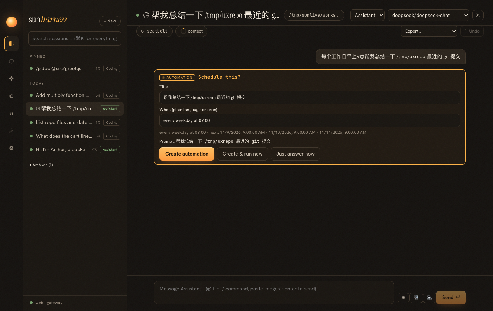
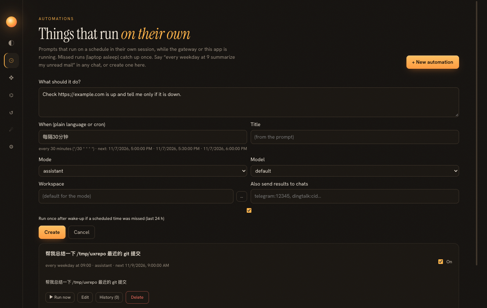
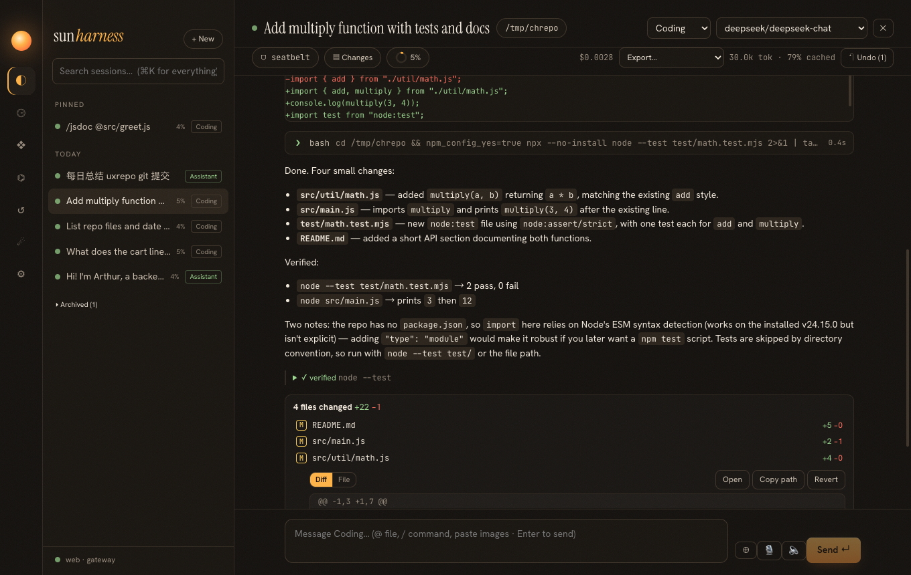
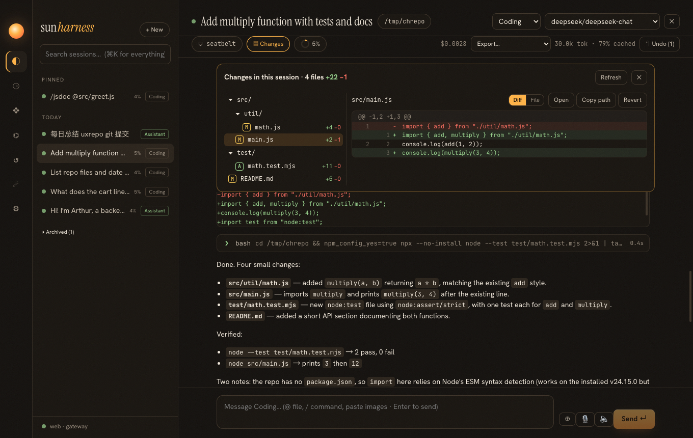

Release 0.7.0 · spec specs/027-automations-and-changes.md
25 · Work that runs itself, changes you can see
Two habits users bring from other tools: ChatGPT Tasks taught them to just say "every morning…", and Cursor, Codex and GitHub taught them to look at "N files changed" before trusting an agent. This release adds both, starting from an analysis of what each competitor does well.
What the competitors teach
| Need | Best seen in | Lesson taken |
|---|---|---|
| Create a schedule | ChatGPT Tasks | plain language in the chat, confirmed by the user, never silently |
| Manage schedules | Cursor Automations, Manus | one menu, run history, each run is a session you can open |
| Reliability | Zapier, n8n | missed runs and failures are first-class; notify on completion |
| Headless runs | Claude Code -p, Codex exec | a run needs no human; approvals must fail closed |
| Turn summary | Codex, Cursor | "N files changed +a −d" right after the answer |
| Review | GitHub PRs, Cursor | file tree + diff, per-file revert |
From a sentence to an automation
How do you avoid turning ordinary prompts into schedules?
With rules, tested on purpose with sentences that must not match. A recurrence ("every weekday", "每周一", "every 30 minutes") is an intent by itself; a one-shot time ("tomorrow at 3pm", "2小时后") only counts with a scheduling verb (remind, run, check, 提醒, 执行…). The negative list found two real bugs: "every month" matched the weekday "mon" (day names now need a word boundary, monthly is checked first), and "fix the daily report generator bug" became a 9:00 schedule (bare "daily", "hourly", "monthly" now count only at the start or end of a message). And nothing is created without a click: a proposal is a question, not an action.
The message was logged but never answered. Isn't the conversation broken for the model?
It would be. When the user creates the automation, the harness appends an assistant message of its own (model: "harness"): "Scheduled 'summarize my mail' — every weekday at 09:00 …". The model's next request therefore sees a question and its answer, and the log stays the single truth.


*/30 * * * * and shows the next runs; below, the automation created from the chat.Missed runs
A laptop is closed at 9:00 more often than a server is down. On each tick the scheduler also asks, for cron automations: did a scheduled minute pass since the last run, within 24 hours? If so it runs once, marked as a catch-up (the prompt says so, the history shows it). The test simulates a Friday 10:15 run missed until noon.
What did this turn change?
Checkpoints already existed for undo (page 18); they are exactly the "before" pictures a review needs. A turn is the range from the message that started it to the run status that ended it, so the card for an older turn still shows what that turn did, even after later turns edited the same file again (the "after" is the next snapshot, not today's file). A revert is itself checkpointed, which makes it undoable, and the agent is told to re-read the file.


Why did a new one-line file show "+2"?
The diff split "b\n" into two lines, "b" and an empty one. A final newline ends the last line; it is not a line of its own. The fix lives in unifiedDiff, so tool cards, exports, CLI and the review all count the same.
Everywhere, not just the desktop
| Surface | Automations | Changes |
|---|---|---|
| Desktop / web | proposal card, ⏲ menu, notifications | turn card, ▤ Changes review |
| CLI | y/b/n prompt, sun automations … | summary after each turn and sun run, /changes, /diff, /revert, sun changes |
| Chat bots | /yes /both /no, /automations, results to configured chats | "📝 N files changed" after a turn |
Verified
| Check | Result |
|---|---|
| 10 English/Chinese recurring phrases, one-shot rules, 5 sentences that must not schedule | pass |
| next runs, missed-run detection, descriptions | pass |
proposal: no run, create with harness acknowledgement, double answer refused; "run" answers normally; noDetect | pass |
| create / preview / pause / edit / run / history / catch-up / delete | pass |
| changes per session and per turn (A/M/D, counts, diffs), revert (undoable, model told), workspace-only file reader | pass |
| live: Chinese proposal, Create & run now, Automations page, 4-file coding turn on deepseek-chat (screenshots above) | pass |
Let people say what they want in their own words, but make the machine show what it understood before it acts; and after it acts, show exactly what changed and how to take it back.